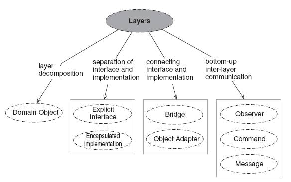

L'uso dei pattern languages viene associato a un processo evolutivo, incrementale e ricorsivo
di piecemeal growth che, partendo da una visione del "tutto", applica
gradualmente i pattern per trasformare una prima situazione e/o architettura di base,
in cui si manifesta un particolare problema, in una nuova
situazione e/o architettura in cui il problema è risolto, ripetendo
il procedimento per i nuovi problemi che si possono porre nella nuova situazione.
Questo tipo di processo non è composizionale nè a cascata ([POSA5] pg. 301) e
condivide molti aspetti dei processi agili [CoHa04], in cui il sistema evolve attraverso forme intermedie stabili
e logicamente integrate: ogni struttura è trasformata preservando la visione
e le proprietà della struttura più ampia di cui prende il posto.
Nell'ottica piecemeal growth lo schema logico
introdotto in Un percorso di riferimento può essere riletto
attraverso una sequenza di domande-risposte.
- Una volta compresi i requisiti ci si può chiedere:
come organizzare le funzionaltà richieste
in insiemi coerenti in modo che ciascun insieme possa essere sviluppato
e modificato in modo indipendente dagli altri?
Una tipica risposta consiste nella
definizione di un'architettura logica di base organizzata in layer orizzontali
applicando il pattern Layers (pg. 185).
Figura 1. Pattern Layers
Figura 2. Relazioni del pattern Layers

E' frequente individuare i seguenti livelli orizzontali (POSA4 pg. 67):
- Presentazione: ha la responsabilità di contenere le intrafcce di
accesso alle operazioni del sistema e il supporto all'utente.
- Processi di business: ha la responsabilità di
realizzare le funzionalità dell'applicazione.
- Oggetti di business: ha la responsabilità di definire
e gestire le entità del dominio applicativo, sulle quali operano
i processi di business del livello superiore.
- Infrastruttura: ha la responsabilità di realizzare funzionalità
indipendenti dal dominio; da essa può dipendere il soddisfacimento
di molti requisiti non funzionali.
- Accesso: ha la responsabilità di gestire
gli accessi a supporti esterni al sistema, in primo luogo ai
database.
Va ricordato che questa organizzazione è puramente logica e potrebbe ben rappresentare
l'architettura logica complessiva del sistema finale;
nulla vieta che l'architettura finale del sistema sia poi realizzata diversamente.
- Subito dopo si può avanzare una seconda domanda di carattere
generale: come raffinare ciascun layer
in parti cui assegnare specifiche responsabilità applicative?
Una tipica risposta consiste nell'applicare il pattern Domain Model
per definire un insiene di parti auto-contenute ciascuna associata a precise
responsabilità funzionali; queste parti corrispondono in pratica agli oggetti di business
derivati/derivabili dall'analisi.
Figura 3. Pattern Domain Model
Figura 4. Relazioni del pattern Domain Model
Ciascuno dei layer orizzontali
viene quindi articolato attraverso una decomposiozne verticale
in diversi domain objects.
- L'obiettivo di definire un'architettura logica del problema
astraendo da ogni dettaglio implementativo implica che si debba anche
dare risposta ad un'ulteriore domanda:
come evitare che una parte debba
dipendere in modo diretto dalla realizzazione di un'altra?.
La risposta consiste nel separare, per ogni layer e domain object,
la specifica delle funzionalita offerte dalla loro
realiizazione, adottando i pattern Explicit Interface (pg. 281)
e Encapsulated Implementation (pg. 313).
Figura 5. Pattern Explicit Interface
Figura 6. Pattern Encapsulated Implementation
Figura 7. Relazioni Encapsulated Implementation
- A livello di architettura logica è anche opportuno porsi il seguente problema:
come evitare che un domain obejct debba affrontare in modo diretto
dettagli sulle modalità di comunicazione con gli altri domain objects?
Una tipica risposta è fare riferimento al pattern Broker (pg. 237).
Figura 8. Pattern Broker
Tutta la fase di progettazione può
essere affrontata in modo sistematico cercando di trasformare
l'architettura logica in una architettura di progetto
seguendo ancora uno schema domanda-risposta.
Una tipica domanda può essere ad esempio:
come evitare overhead e inefficienze senza distruggere il sistema logico a layer?
Questo caso è molto frequente in tutti i sistemi in cui sia necessario
mantenere allineato un domain object del presentation layer (ad esempio
una vista) con lo stato di un oggetto di un livello inferiore
(ad esempio del business object layer).
Una tipica risposta è applicare pattern che si basano sul
principo della
inversione del controllo quali
Model View Controller (MVC)
o
Presentation-Abstraction.Control (PAC) .
Figura 9. Pattern MVC
Figura 10. Pattern PAC